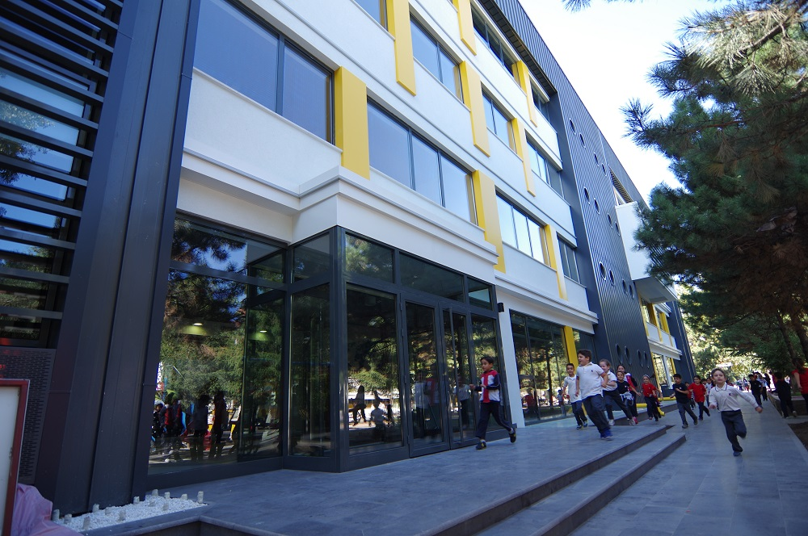

TED PRİMARY SCHOOL

In the light of the principles of science, love, respect and tolerance, which form the basis of the education system, students are provided with a democratic and contemporary education environment. In addition to individual learning, it is aimed to raise individuals who are socialized through teamwork, with developed thinking skills, who are aware of their responsibilities, who are respectful, who obey the rules, who can communicate effectively with their family, friends, teachers and environment, who are constantly learning, who develop and become conscious as they learn. In the primary school building; There are equipped classes suitable for different learning styles, branch classrooms, science and technology laboratory, computer laboratory and information access center (library).
The aims and duties of primary education at TED Kayseri College Primary School, in accordance with the general objectives and basic principles of Turkish National Education; (1) To teach students about Atatürk's principles and revolutions, Atatürk's nationalism, and the facts that lie at the root of our social struggle, (2) To provide children with the basic knowledge, skills, behaviors and habits necessary for them to grow up as good and useful citizens, (3) To prepare children for social life and higher education by raising them in line with their interests and abilities, (4) Develop children's aesthetic sense; to give them the ability to see the truth, the beautiful and the good, and to create in them superior feelings such as acting together, cooperation, cooperation, friendship and human love.